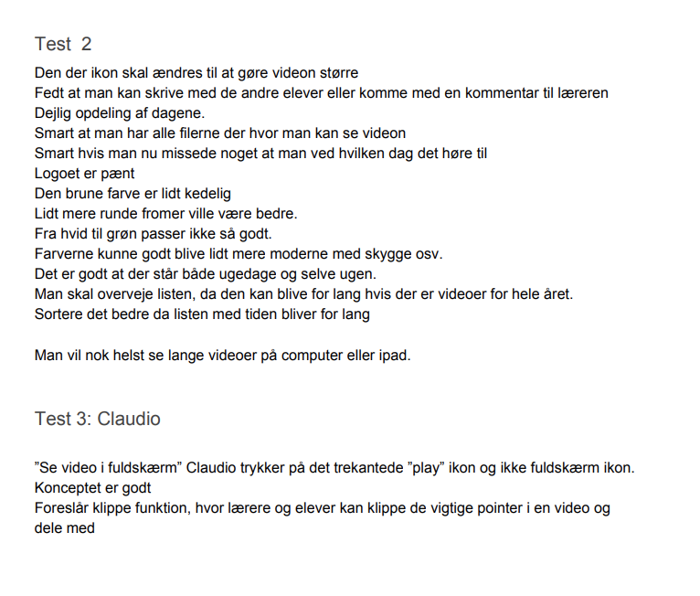
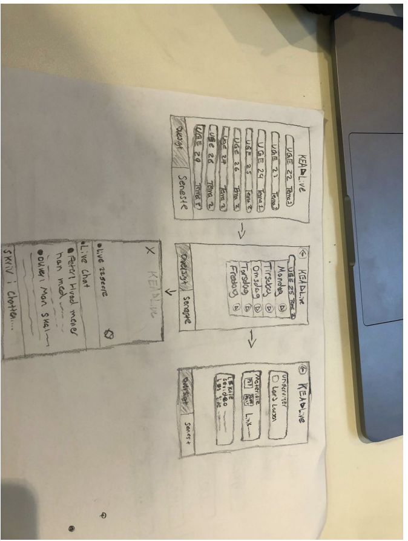
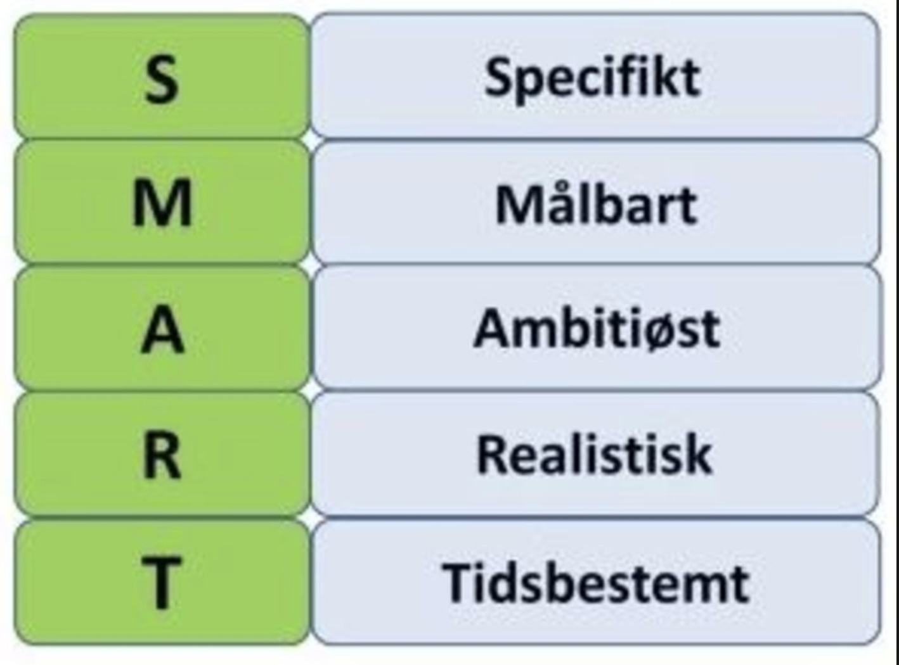
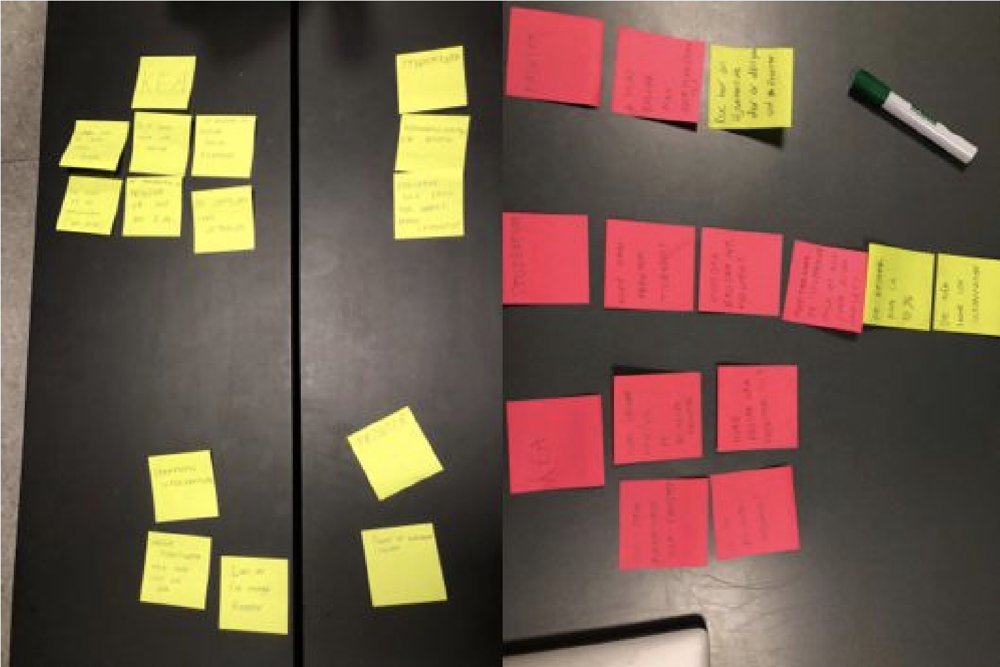

Kort beskrivelse
I dette tema her jeg lært om hvilke teorier, værktøjer og metoder man kan benytte til research, design, test og produktion af digitale løsninger. I de forskellige opgaver brugte jeg for eksempel tænkehøjt test til at finde ud af hvordan målgruppen navigere rundt i et site. Det var meget hjælpsomt og gav gode ideer til hvordan man kan forbedre sit site.
Jeg lærte også hvordan man kan bruge adobe Xd til at lave en velfungerende prototype, som man rent faktisk kan teste inden man overhoved begynder med at Kode. Dette gik op for mig da vi designede (Kea Live) mobil appen, og fandt ud af at vores tænkehøjt test gjorde os opmærksomme på forbedringer vi kunne implementere.
Jeg lærte at arbejde i grupper med design sprint der er fordelt på 5 dages intensivt arbejde. Det gjorde det meget mere overskueligt at arbejde på Denne måde, Da der er faste mål for hvad man skal være færdig med fra dag til dag.

Jeg lærte at se sammenhæng mellem brugernes behov og virksomhedens strategi, behov og mål i design. Ved hjælp af Konkurrentanalyse og ekspert oplæg.
Vi lavede en masse solution sketches, og endte med at lave en afstemning på den sketch vi synes var bedst. Hvor vi blandt andet brugte Speed Critique og Supervote. Dette gjorde det meget nemmere for os at blive enige om en konkret design struktur.
Vi gjorde også brug a lightning demos, som hjalp os med en masse gode ideer. Her er et eksempel på en hjemmeside vi fandt som gav os meget inspiration til vores endelige design.

Vi gjorde brug af "SMART" modellen og how "might we" Der hjalp mig med at få en konkret ide til mit design. Det satte samtidig også rammer for Hvad der er realistisk at lave. Hvilket er med til at spare ens tid, så man ikke laver noget overflødigt
 